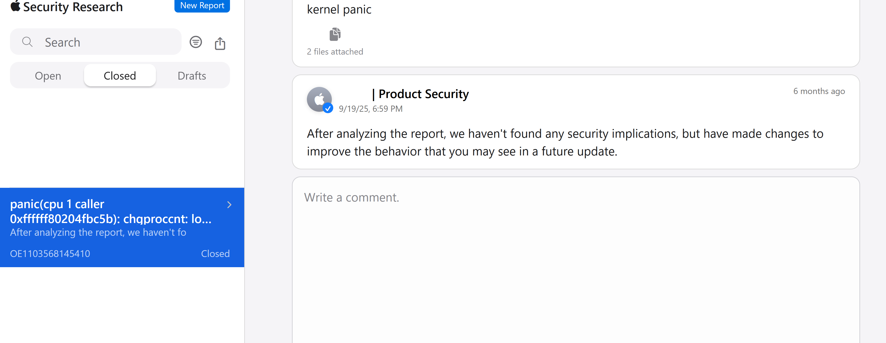
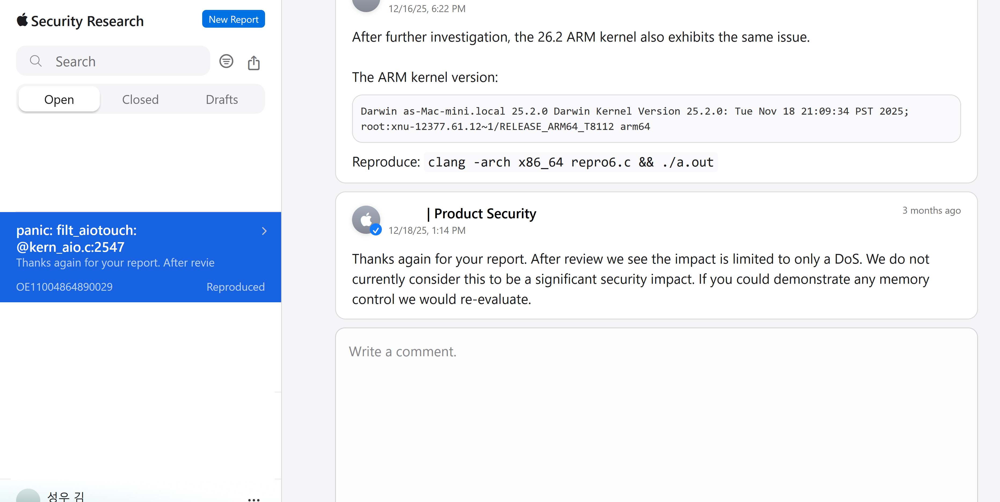
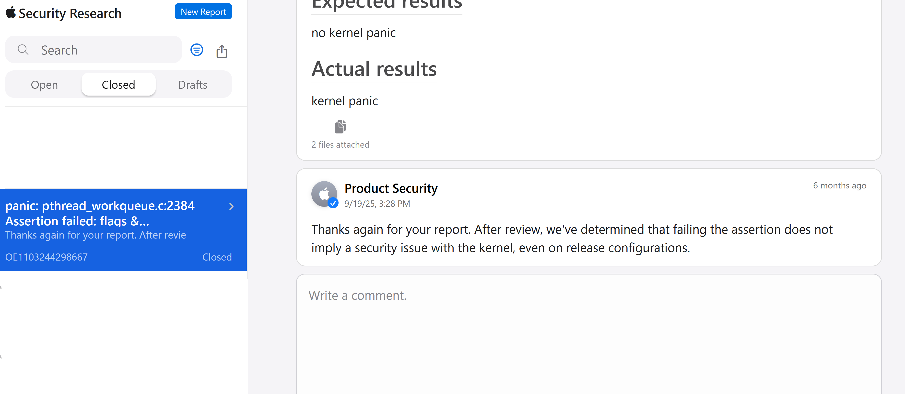
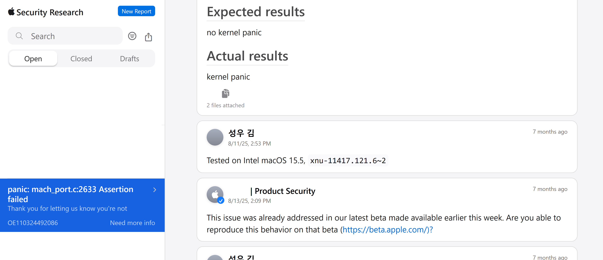

Bug discovery
Last updated: Mar. 23, 2026 by Sungwoo Kim.
Five previously unknown bugs are identified. All findings were reported and three bugs have been fixed.
DISCLAIMER:
The proof-of-concept (POC) codes are provided for educational and research purposes only. They demonstrates vulnerabilities that have already been patched by Apple and should not be used to attack unpatched systems.
No CVE has been assigned to these issues by the vendor as of this writing. The authors do not condone or support any illegal or malicious use of this code. Use it responsibly and only in controlled environments.
Fuzzer performance
- Config: 4VM/2C/2T/8G
- Edge coverage: 12% (plateaued after 3 hours)
- Throughput: 11 syscalls/sec
- dashboard
- graphs
- coverage (43MB)
Bug 1. Lost user in chgproccnt
A user with multiple effective UIDs (e.g., root) can trigger an unexpected reboot.
- Apple Silicon: ✅
- Intel: ✅
- Vulnerable kernel version: <= xnu-11417.140.69
- Vulnerable devices: macOS <= 15.6, iOS / iPadOS <= 18.6
PoC: chgproccnt.c
Panic log:
panic(cpu 1 caller 0xffffff80204fbc5b): chgproccnt: lost user @kern_proc.c:329
Panicked task 0xffffffa52a76c980: 3 threads: pid 392: a.out
Backtrace (CPU 1), panicked thread: 0xffffff96c62e10c8, Frame : Return Address
0xffffffc9e642fa80 : 0xffffff801ffd9511 mach_kernel : _handle_debugger_trap + 0x4c1
[snip]
0xffffffc9e642fe90 : 0xffffff8020507289 mach_kernel : _setreuid + 0x119Apple's response

Bug 2. Invalid aio
- Apple Silicon: ✅
- Intel: ✅
- Vulnerable kernel version: <= root:xnu-12377.61.12~1
- Vulnerable devices: iOS / iPadOS <= 26.2, macOS <= 26.2
A non-root user can freeze the machine or trigger an unexpected reboot.
PoC: aio.c
panic(cpu 0 caller 0xffffff802064f04c): filt_aiotouch: kn 0xffffff9c6c797980 kev 0xfffffffede42be40 (NOT EXPECTED TO BE CALLED!!) @kern_aio.c:2547
[snip]
0xfffffffede42bc30 : 0xffffff802098c07d mach_kernel : _panic + 0x81
0xfffffffede42bd20 : 0xffffff802064f04c mach_kernel : _encode_comp_t + 0x1dc
0xfffffffede42bd30 : 0xffffff802066dfb7 mach_kernel : _kevent_register + 0x947
0xfffffffede42be00 : 0xffffff8020672496 mach_kernel : _kevent + 0x466
0xfffffffede42bef0 : 0xffffff802067208c mach_kernel : _kevent + 0x5c
0xfffffffede42bf40 : 0xffffff80207f393b mach_kernel : _unix_syscall64 + 0x1eb
0xfffffffede42bfa0 : 0xffffff80200ebdb6 mach_kernel : _hndl_unix_scall64 + 0x16Apple's response

Bug 3. Missing a check in bsdthread_ctl() (Development kernel only)
A non-root user can trigger an unexpected reboot in *development or debug kernel*.
PoC: bsdthread_ctl.c
Panic log:
panic(cpu 1 caller 0xffffff80208b5e57): pthread_workqueue.c:2384 Assertion failed: flags & WORKQ_SET_SELF_QOS_FLAG at 0xffffff802149bb92, registers:
[snip]
Panicked task 0xffffff86a13ec740: 3 threads: pid 572: syz-executor
Backtrace (CPU 1), panicked thread: 0xffffff869a36bd38, Frame : Return Address
[snip]
0xffffffd68b68fc70 : 0xffffff80208d74d1 mach_kernel : trap_from_kernel + 0x26
0xffffffd68b68fc90 : 0xffffff802149bb92 mach_kernel : _bsdthread_ctl + 0x1bb2
0xffffffd68b68fed0 : 0xffffff8021b21194 mach_kernel : _unix_syscall64 + 0x484
0xffffffd68b68ffa0 : 0xffffff80208d7916 mach_kernel : _hndl_unix_scall64 + 0x16Apple's response

Bug 4 and 5
A root user can freeze the machine and trigger an unexpected reboot.
- Apple Silicon: ❌
- Intel: ✅
- Vulnerable kernel version: the current version
- Vulnerable devices: The current Intel macOS
PoC and a panic log will be opened after the corresponding patch.
Known bug rediscovery: Invalid mach_port construction
A non-root user can trigger an unexpected reboot. This issue has already been fixed in beta builds before I reported.
- Apple Silicon: ❓
- Intel: ✅
- Vulnerable kernel version: <= xnu-11417.121.6
- Vulnerable devices: Intel macOS <= 15.5(Sequoia)
PoC: mach_port.c
Panic log:
panic(cpu 0 caller 0xffffff80208b5e57): mach_port.c:2633 Assertion failed: (options->flags & [snip]
Panicked task 0xffffff869c93b7d0: 4 threads: pid 1115: syz-executor
Backtrace (CPU 0), panicked thread: 0xffffff869e7706f0, Frame : Return Address
[snip]
0xffffffeef55cf9d0 : 0xffffff80208d74d1 mach_kernel : trap_from_kernel + 0x26
0xffffffeef55cf9f0 : 0xffffff80202cd1cd mach_kernel : _mach_port_construct + 0x10cd
0xffffffeef55cfd30 : 0xffffff80202bd0e4 mach_kernel : __kernelrpc_mach_port_construct_trap + 0x1d4
0xffffffeef55cfe50 : 0xffffff8020873a4a mach_kernel : _mach_call_munger64 + 0x41a
0xffffffeef55cffa0 : 0xffffff80208d7936 mach_kernel : _hndl_mach_scall64 + 0x16Apple's response
